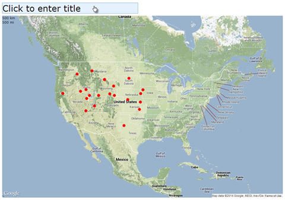
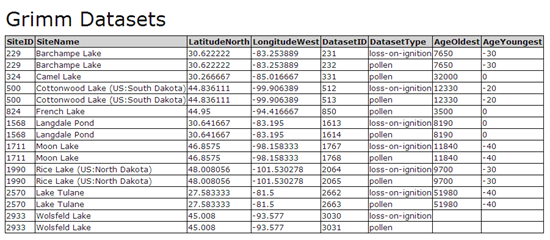

The print feature formats a print-ready page of either the current map view, or the selected result table.
Map
- Before printing, pan and zoom the map to your area of interest. Optionally, use the Search Properties tools to change symbology of layers. You can toggle the display of individual search layers in the Search List.
- Click the button in the main application toolbar.
- Click the text prompt to type a title if desired.

- Print the page using your Web browser's print function.
Table
- Select the search results table you wish to print.
- Click the button in the main application toolbar.
- Optionally, click the text prompt to type a title.

- Print the page using your Web browser's print function.
Created with the Personal Edition of HelpNDoc: Easily create CHM Help documents